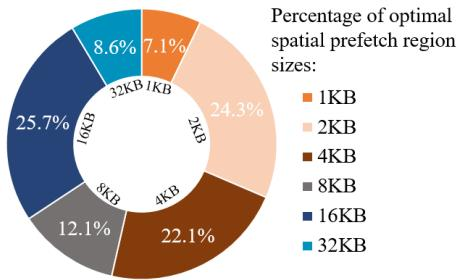
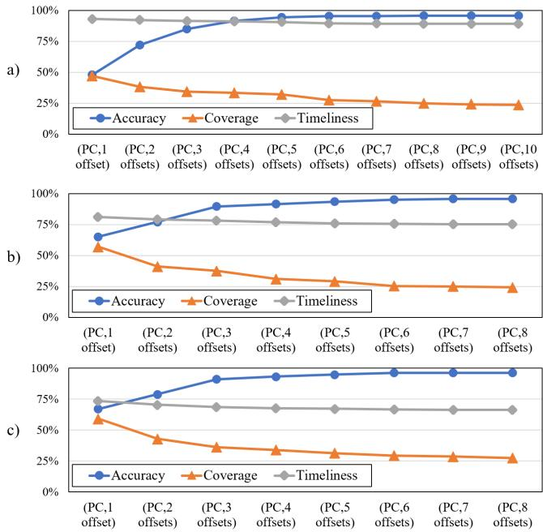
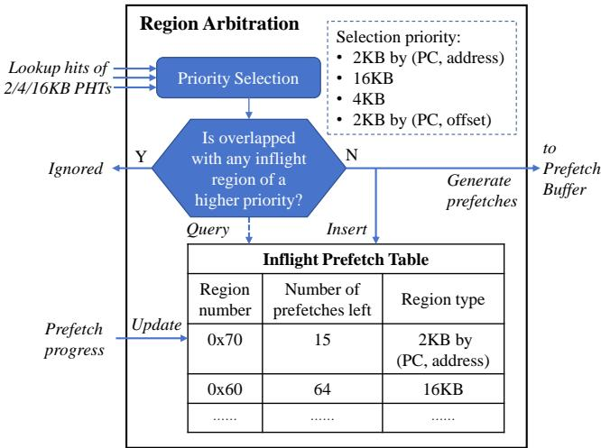
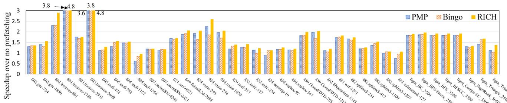
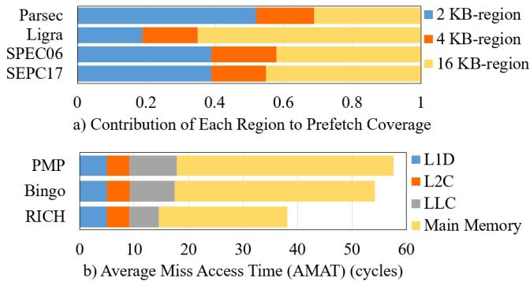

RICH Prefetcher: Storing Rich Information in Memory to Trade Capacity and Bandwidth for Latency Hiding 图表详解¶
Table 1: DDR specifications across generations exhibit the high-bandwidth high-capacity and high-latency trends¶

- 该图片为论文中的 Table 1，标题明确指出其展示的是 DDR 规格在不同代际间的演进趋势，核心聚焦于 高带宽、大容量与高延迟 的并存现象。
- 表格横向列出四列关键指标：DDR Gen.（代际）、Peak speed（峰值速度）、Max. size（最大容量）、latency on row hit（行命中延迟） 和 latency on row miss（行未命中延迟）。
- 纵向对比三代主流 DDR 标准：DDR3 [27]、DDR4 [28]、DDR5 [29]，清晰呈现技术迭代路径。
| DDR Gen. | Peak speed | Max. size | latency on row hit | latency on row miss |
|---|---|---|---|---|
| 3 [27] | 2133 MT/s | 8Gb | 10-15ns | 20-30ns |
| 4 [28] | 3200 MT/s | 16Gb | 12-15ns | 25-30ns |
| 5 [29] | 7200 MT/s | 64Gb | 14-18ns | 28-36ns |
- 峰值速度 从 DDR3 的 2133 MT/s 跃升至 DDR5 的 7200 MT/s，增长超过 三倍，体现 高带宽 趋势。
- 最大容量 从 8Gb 增至 64Gb，同样实现 八倍提升，印证 大容量 发展方向。
- 访问延迟 指标同步上升：行命中延迟 从 10-15ns 增至 14-18ns，行未命中延迟 从 20-30ns 扩展至 28-36ns，表明 高延迟 成为伴随性能提升的代价。
- 该表格作为背景支撑，旨在说明现代内存系统设计中 带宽与容量提升以牺牲延迟为代价 的普遍规律，为论文提出的 RICH prefetcher 针对高延迟场景优化提供必要性依据。
Figure 1: Different workloads favor distinct spatial region sizes for prefetching; approximately half achieve peak performance under conventional 4 KB regions,while the remainder achieve peak performance with larger spatial region sizes¶

- 图片为一个环形图，标题为“Figure 1: Different workloads favor distinct spatial region sizes for prefetching; approximately half achieve peak performance under conventional 4 KB regions, while the remainder achieve peak performance with larger spatial region sizes”，旨在展示不同工作负载在预取时对空间区域大小的偏好。
- 图表中心标注“Percentage of optimal spatial prefetch region sizes:”，表明其统计的是各区域尺寸作为最优预取单元的占比。
- 图例清晰对应六种区域尺寸：1KB、2KB、4KB、8KB、16KB、32KB，分别以不同颜色区分。
- 各区域尺寸对应的百分比如下表所示：
| 区域尺寸 | 占比 |
|---|---|
| 1KB | 7.1% |
| 2KB | 24.3% |
| 4KB | 22.1% |
| 8KB | 12.1% |
| 16KB | 25.7% |
| 32KB | 8.6% |
- 数据显示，4KB区域虽是传统主流选择，但仅占22.1%，不足四分之一；而16KB区域占比最高，达25.7%，成为最常被选为最优预取尺寸的工作负载。
- 2KB和16KB合计占比50%，印证了原文“approximately half achieve peak performance under conventional 4 KB regions, while the remainder achieve peak performance with larger spatial region sizes”的结论。
- 该图直观揭示了单一固定区域尺寸（如4KB）无法满足多样化的访问模式需求，支持论文中提出多尺度区域预取的设计动机。
Figure 2: The multi-offset trigger mechanism can distinguish "common-origin, later-divergent" access streams¶

- 图片展示了 multi-offset trigger mechanism 如何区分具有“共同起点、后期发散”特征的访问流，这是传统单偏移触发机制无法做到的。
- 左侧图示为 single-offset trigger mechanism 的局限性：在 4 KB 空间区域内，两个访问流 A 和 B 均从地址 0x1 开始访问，但后续路径不同（A 访问 0x4, 0xc；B 访问 0xc, 0x1），单偏移机制仅凭首个偏移量无法区分二者，导致误预测。
- 右侧图示为 multi-offset trigger mechanism 的优势：通过记录多个访问偏移（如 0x1 和 0x4 对应流 A，0x1 和 0xc 对应流 B），系统可识别出两个流虽起始相同，但后续行为不同，从而分别建模并准确预测。
- 该机制的核心在于利用 多偏移信息 验证访问模式的连续性和方向性，避免将“common-origin, later-divergent”流错误归类为同一模式。
- 图中明确标注了两个访问流的具体地址序列：
- 流 A 地址：0x1, 0x4, 0xc
- 流 B 地址：0x1, 0xc, 0x4
- 此设计直接支持 RICH prefetcher 中对 16 KB 区域采用 (PC, 5 offsets) 触发策略，以提升大区域预取的准确性，同时牺牲部分覆盖率换取高精度。
| 机制类型 | 能否区分流 A/B | 核心依据 | 缺陷/优势 |
|---|---|---|---|
| Single-offset | ❌ 不能 | 仅依赖首个访问偏移（0x1） | 无法捕捉后续发散行为，易产生误预测 |
| Multi-offset | ✅ 能 | 依赖多个访问偏移组合（如 0x1+0x4 vs 0x1+0xc） | 提升准确性，尤其适用于大区域预取场景 |
- 该图是 RICH 设计中 Insight 2 的直观体现，即“观察更多访问偏移可提高准确性，代价是降低覆盖率”，为后续多尺度区域仲裁机制奠定基础。
Figure 3: By using more access offsets in a trigger, we can trade off between the accuracy and coverage of prefetching. Specifically, a), b),and c) correspond to 16 KB-region, 4 KBregion, and 2 KB-region.¶

-
图片展示了在不同空间区域大小（16 KB、4 KB、2 KB）下，使用不同数量的访问偏移量（offsets）作为触发条件时，预取器的 Accuracy（准确率）、Coverage（覆盖率）和 Timeliness（及时性）三者之间的权衡关系。
-
三个子图分别对应：
- a) 16 KB-region：随着触发条件中包含的偏移量从 (PC,1 offset) 增加到 (PC,10 offsets)，Accuracy 从约50%显著上升至接近100%，而 Coverage 则从约50%持续下降至约20%，Timeliness 基本保持稳定在75%-80%区间。
- b) 4 KB-region：随着偏移量从 (PC,1 offset) 增加到 (PC,8 offsets)，Accuracy 从约65%上升至约95%，Coverage 从约60%下降至约25%，Timeliness 稍有下降但仍维持在75%左右。
- c) 2 KB-region：随着偏移量从 (PC,1 offset) 增加到 (PC,8 offsets)，Accuracy 从约65%上升至约95%，Coverage 从约60%下降至约25%，Timeliness 略有波动但基本稳定在70%以上。
-
数据趋势总结如下：
| 区域大小 | Accuracy 趋势 | Coverage 趋势 | Timeliness 趋势 |
|---|---|---|---|
| 16 KB | 显著上升 | 显著下降 | 基本稳定 |
| 4 KB | 上升 | 下降 | 略降 |
| 2 KB | 上升 | 下降 | 基本稳定 |
- 核心结论：
- 增加触发条件中的访问偏移量可有效提升 Accuracy，尤其在大区域（如16 KB）中效果显著，能将准确率从不足50%提升至90%以上。
- 代价是 Coverage 显著降低，因为更严格的触发条件导致更少的预取机会被激活。
- Timeliness 受影响较小，表明该机制主要影响预测是否发生，而非预测时机。
- RICH设计据此采用差异化策略：对16 KB区域采用**(PC,5 offsets)以追求高精度，对4 KB区域采用(PC,3 offsets)平衡精度与覆盖，对2 KB区域保留(PC,1 offset)或(PC,address)**以最大化覆盖。
24623341e46f13ed9c6004980d11054a104d928f1085abdd3d49c538fd7c2597.jpg¶

-
图片展示了 RICH 预取器在不同区域大小和触发机制下的 Accuracy（准确率）与 Coverage（覆盖率）对比，直观呈现了其多尺度设计的核心权衡策略。
-
数据以柱状图形式呈现，蓝色代表 Accuracy，橙色代表 Coverage，横轴为四种不同的预取配置：
- 16 KB-region (PC, 5 offsets)
- 4 KB-region (PC, 3 offsets)
- 2 KB-region (PC, offset)
- 2 KB-region (PC, address)
-
各配置性能数据如下表所示：
| 配置 | Accuracy | Coverage |
|---|---|---|
| 16 KB-region (PC, 5 offsets) | 约 90% | 约 30% |
| 4 KB-region (PC, 3 offsets) | 约 85% | 约 40% |
| 2 KB-region (PC, offset) | 约 65% | 约 60% |
| 2 KB-region (PC, address) | 约 90% | 约 10% |
-
分析表明，RICH 的设计实现了明确的性能取舍：
- 大区域（16KB）：采用 (PC, 5 offsets) 触发，追求 高准确率（~90%），但牺牲了部分覆盖率（~30%），适用于对误预取代价敏感的场景。
- 中区域（4KB）：采用 (PC, 3 offsets) 触发，在准确率（~85%）和覆盖率（~40%）之间取得平衡。
- 小区域（2KB）：采用 (PC, offset) 触发，优先保证 高覆盖率（~60%），准确率相对较低（~65%），用于捕捉更广泛的访问模式。
- 特殊小区域（2KB）：采用 (PC, address) 触发，其准确率与 16KB 区域相当（~90%），但覆盖率极低（~10%），因其触发条件苛刻（需精确地址匹配），主要用于特定高精度需求。
-
此图表是 RICH 设计哲学的直接体现：通过 多级触发机制 和 区域仲裁策略，动态选择最优预取粒度，从而在整体上实现 高准确率、高覆盖率和高及时性 的协同优化。
Figure 4: Achieving high accuracy in large spatial regions and high coverage in small spatial regions by using different numbers of trigger offsets Figure 5: Placing 16 KB PHT off-chip keeps most prefetch opportunities, even with additional memory access latency¶

- 图表标题为 Figure 5，其核心结论是：将 16 KB PHT 放置在片外（off-chip）仍能保留大部分预取机会，即使存在额外的内存访问延迟。
- 横轴表示 Additional Memory Access Latency，从 0 ns 到 50 ns，以 10 ns 为步长递增，模拟未来高延迟内存系统场景。
- 纵轴表示 Late Prefetches，即“迟到预取”的比例，范围从 5% 到 20%，衡量因元数据加载延迟导致预取请求未能及时完成的比例。
- 数据趋势显示，随着额外延迟增加，Late Prefetches 比例呈缓慢上升趋势：
- 在 0 ns 延迟时，约为 11%。
- 在 50 ns 延迟时，上升至约 15%。
- 这表明即使引入高达 50 ns 的额外延迟，RICH prefetcher 仍能维持超过 85% 的预取机会未被浪费，验证了其对延迟的容忍能力。
- 此设计策略有效平衡了 on-chip area overhead 与 off-chip latency penalty，通过将大区域模式（16 KB-region patterns）卸载到主存，显著节省芯片面积，同时性能损失可控。
- 该结果支撑论文中提出的 hierarchical storage design，即高频模式保留在片上缓存，低频模式存储于片外，实现成本与性能的最优折衷。
| Additional Memory Access Latency | Late Prefetches (%) |
|---|---|
| 0 ns | ~11% |
| 10 ns | ~12% |
| 20 ns | ~12.5% |
| 30 ns | ~13.5% |
| 40 ns | ~14% |
| 50 ns | ~15% |
Table 2: Categorization of RICH's metadata¶

-
Table 2 对 RICH prefetcher 的元数据进行了系统性分类，依据三个核心维度：Area overheads、Access frequency 和 Latency tolerance，并据此决定其存储位置（on-chip/off-chip）。
-
元数据被划分为四类：
- Large region’s patterns (16 KB-region)
- Small region’s patterns (4 KB & 2 KB-region)
- Training metadata
- Control metadata
-
各类元数据的特性与 RICH 的决策如下表所示：
| 元数据类别 | Area overheads | Access frequency | Latency tolerance | RICH’s structures | RICH’s decision |
|---|---|---|---|---|---|
| Large region’s patterns | high (> 100 KB) | mixed | high | 16 KB-region PHT Cache, 16 KB-region PHT | Frequently accessed: on-chip Infrequently accessed: off-chip |
| Small region’s patterns | medium (~30 KB) | mixed | low | 4 KB-region PHT, 2 KB-region PHT | on-chip |
| Training metadata | low (< 10 KB) | high | low | FTs, ATs | on-chip |
| Control metadata | low (< 10 KB) | high | low | Inflight Prefetch Table, 16 KB-region Valid Map | on-chip |
- 关键设计洞察：
- 大区域模式因面积开销巨大且对延迟容忍度高，采用分层存储：高频访问部分缓存在片上（PHT Cache），低频部分卸载至片外主存，以平衡性能与成本。
- 小区域模式、训练元数据和控制元数据均因访问频率高或对延迟敏感，被强制部署在片上，确保快速响应。
- 此分类策略是 RICH 实现“用容量和带宽换延迟隐藏”核心思想的关键支撑，有效规避了传统预取器受限于片上资源的瓶颈。
Table 3: Cover ratio under a 2oo-entry storage constraint of 16 KB-region patterns¶

- 该图片为论文中的 Table 3，标题为 “Cover ratio under a 200-entry storage constraint of 16 KB-region patterns”，用于评估在仅保留 200个条目 的存储限制下，RICH prefetcher 对 16 KB-region patterns 的覆盖能力。
- 表格展示了8个代表性工作负载（traces）的覆盖比例（% Covered），这些工作负载在使用16 KB区域预取时能获得显著性能收益。
- 数据表明，在有限的200个条目缓存容量下，RICH仍能对多数工作负载实现高覆盖率，验证了其 分层存储策略 的有效性。
| Trace | % Covered |
|---|---|
| bwaves-891 | 100.0% |
| gcc-1850 | 93.7% |
| mcf-782 | 90.4% |
| mcf-1152 | 86.7% |
| bwaves-2609 | 80.5% |
| fotonik3d-7084 | 66.9% |
| roms-1070 | 38.7% |
| roms-294 | 32.8% |
- 覆盖率最高的工作负载是 bwaves-891，达到 100%，说明其16 KB区域访问模式高度集中，少量高频模式即可完全覆盖。
- 覆盖率最低的是 roms-294 和 roms-1070，分别为 32.8% 和 38.7%，表明这些工作负载的访问模式更分散，需要更多条目才能有效覆盖。
- 此结果支持论文中提出的观点：16 KB区域模式具有 混合频率分布，因此采用 分层存储（高频模式放片上缓存，低频模式放片外内存）是合理且高效的。
Figure 6: Architecture of RICH¶

- 图片展示了 RICH Prefetcher 的完整架构，分为 On-chip 和 Off-chip 两大模块，通过清晰的数据流和控制流连接。
- On-chip 部分 包含三个核心组件：Training Unit、Pattern Storage（即 PHTs）和 Prediction Unit，并辅以 Region Arbitration 和 Control Units。
- Training Unit 负责从 L2 cache miss/hit 事件中捕获访问模式，为 16 KB、4 KB 和 2 KB 三个区域分别维护 Filter Table (FT) 和 Accumulation Table (AT)，用于过滤噪声并累积位向量模式。
- Pattern Storage 中，2 KB 和 4 KB 区域的 PHT 完全驻留在芯片上；而 16 KB 区域采用 分层设计，仅保留一个小型 PHT Cache 在片上，作为主存中完整 16 KB-region PHT 的缓存。
- Prediction Unit 是触发预测的核心，包含三个 Lookup Units，分别对应不同区域大小。它们根据 (PC, address) 或 (PC, offsets) 等触发条件查询对应的 PHT。
- Region Arbitration 单元负责解决多区域同时触发时的优先级问题，并与 Inflight Prefetch Table 协作，避免对同一内存空间的重复或重叠预取。
- Control Units 专门管理 16 KB 区域的元数据读写，包括与 Valid Map 单元协同判断离线模式是否存在，以及异步发起对主存的元数据加载请求。
- Off-chip 部分 主要由 Main Memory 构成，其中存储了完整的 16 KB-region PHT 数组。当片上缓存未命中且 Valid Map 标记有效时，会触发对主存的访问。
- 数据流向明确：L2 cache 的访问事件驱动 Training Unit 和 Lookup Units；Prediction Unit 的输出经 Region Arbitration 后进入 Prefetch Buffer，再通过 TLB 发送至 LLC 和 Main Memory。
- 整体架构体现了 “用容量和带宽换延迟” 的设计理念，将大量不常访问的 16 KB 模式卸载到主存，同时利用片上高速缓存保证关键路径的低延迟。
- 关键术语如 PHT, FT, AT, TLB, LLC, Valid Map, Inflight Prefetch Table 均在图中清晰标注，符合论文描述。
| 组件名称 | 所属模块 | 功能简述 |
|---|---|---|
| Training Unit | On-chip | 从 L2 访问事件中学习并构建各区域的位向量模式。 |
| 16 KB-region PHT Cache | On-chip | 片上缓存，存储高频访问的 16 KB 区域模式。 |
| 4 KB-region PHT / 2 KB-region PHT | On-chip | 存储对应区域的访问模式，完全驻留片上。 |
| Lookup Units | On-chip | 根据触发条件查询 PHT，生成预取请求。 |
| Region Arbitration | On-chip | 解决多区域冲突，选择最优预取方案。 |
| Inflight Prefetch Table | On-chip | 记录正在进行的预取，防止重叠。 |
| 16 KB-region Control | On-chip | 管理 16 KB 区域元数据的离线读写。 |
| Valid Map | On-chip | 标记主存中哪些 16 KB 模式是有效的。 |
| 16 KB-region PHT (Main Memory) | Off-chip | 存储所有 16 KB 区域模式的主数组。 |
| Prefetch Buffer | On-chip | 缓冲待发出的预取流。 |
| TLB | On-chip | 处理虚拟地址到物理地址的转换。 |
| LLC / Main Memory | Off-chip | 最终执行预取操作的目标存储层级。 |
Figure 7: Training process of each region¶

-
图片展示了 RICH 预取器中每个区域（2KB、4KB、16KB）的训练过程，核心机制基于 Filter Table (FT) 和 Accumulation Table (AT) 两个表协同工作。
-
训练流程以一个 (PC, 2 offsets) 触发器为例，图中用编号 (1) 到 (5) 标示了关键步骤：
- (1) 初始访问 P+3：当程序首次访问某个区域内的偏移量 3 时，该信息被记录在 FT 中，但此时不启动模式学习。
- (2) 第二次访问 P+1：后续访问偏移量 1，FT 再次记录。此时系统仍处于“过滤”阶段，等待更多不同偏移量来确认访问模式的有效性。
- (3) 第三次访问 P+2：当观察到第三个不同的偏移量（此处为 2）时，FT 条目被“提升”至 AT。AT 初始化一个位向量（Pattern），并开始记录所有已访问的偏移量。
- (4) 后续访问 P+4：随着更多访问发生（如偏移量 4），AT 持续更新其位向量，将新访问的偏移位置位（例如，从
001110更新为011110）。 - (5) 区域驱逐：当该区域被 L2 缓存驱逐或 AT 达到容量上限时，最终形成的完整模式会被传输至 Pattern History Table (PHT) 用于后续预测。
-
下表总结了 FT 和 AT 在各步骤中的状态变化：
| 步骤 | Filter Table (FT) 状态 | Accumulation Table (AT) 状态 |
|---|---|---|
| (1) | 记录 PC 和偏移量 3 | 无条目 |
| (2) | 记录 PC 和偏移量 3、1 | 无条目 |
| (3) | 将 PC/3,1 条目提升至 AT | 创建新条目，Tag=P，Trigger=PC/3,1，Pattern=001110 |
| (4) | 保持不变 | 更新 Pattern 为 011110 |
| (5) | 保持不变 | 将最终 Pattern 传输至 PHT |
- 关键设计点：
- 多偏移触发机制：通过要求至少观察到多个不同偏移量（如 2 或 5 个），有效过滤掉噪声访问，确保只有稳定的空间局部性模式才被学习。
- 分阶段学习：FT 负责初步筛选，AT 负责精确建模，这种分离设计降低了硬件复杂度和误学习风险。
- LRU 替换策略：三个区域的 PHT 均采用 LRU 策略管理条目，保证常用模式优先保留。
- 触发器定义：触发器由程序计数器 (PC) 和一组偏移量组成，是识别特定访问模式的关键标识符。
Figure 8: The Region Arbitration unit selects the appropriate region to prefetch (Step P3)¶

-
Region Arbitration 单元负责在多个可能触发的预取区域中选择最优的一个，以避免重复或冲突的预取操作。
-
该单元接收来自 2KB、4KB 和 16KB PHTs 的查找命中信号作为输入，启动优先级仲裁流程。
-
Priority Selection 模块根据预定义的优先级顺序决定哪个区域应被选中：
- 最高优先级：2KB by (PC, address)
- 其次：16KB
- 再次：4KB
- 最低：2KB by (PC, offset)
-
选定区域后，系统会检查其是否与任何更高优先级的 Inflight Prefetch Region 存在重叠：
- 若存在重叠（Y），则当前请求被 Ignored，防止冗余预取。
- 若无重叠（N），则允许生成预取请求并送入 Prefetch Buffer。
-
Inflight Prefetch Table 用于跟踪当前正在执行的预取任务，包含以下字段：
Region number Number of prefetches left Region type 0x70 15 2KB by (PC, address) 0x60 64 16KB ... ... ... -
表格中的条目会随着预取进度动态更新，当 “Number of prefetches left” 归零时，对应条目被移除。
-
此机制确保了预取行为既高效又不浪费带宽，尤其在多尺度区域同时活跃时，能有效协调资源分配。
Table 4: Breakdown of on-chip storage overheads¶

- Table 4 详细列出了 RICH prefetcher 的片上存储开销分解，涵盖多个核心组件的位宽、条目数和总存储容量。
- 各结构的存储开销如下表所示：
| Structure | Width (bits) | Size (entries) | Storage (KB) |
|---|---|---|---|
| FTs (2, 4, 16 KB) | 64, 64, 90 | 64, 64, 64 | 1.7 |
| ATs (2, 4, 16 KB) | 91, 106, 312 | 128, 128, 32 | 4.3 |
| PHTs (2, 4 KB) | 43, 71 | 4096, 1024 | 30.4 |
| 16 KB-region PHT Cache | 271 | 256 | 8.5 |
| Inflight Prefetch Table | 48 | 6 | 0.05 |
| 16 KB-region Valid Map | 1 | 4096 | 0.5 |
| Prefetch Buffer | 48 | 320 | 1.9 |
| Total | — | — | 47.3 |
- FTs (Filter Tables)：用于过滤噪声模式，针对 2 KB、4 KB 和 16 KB 区域分别配置，总占用 1.7 KB。
- ATs (Accumulation Tables)：用于累积访问足迹以构建预取模式，其位宽随区域增大而增加，总占用 4.3 KB。
- PHTs (Pattern History Tables)：存储学习到的访问模式，2 KB 和 4 KB 区域的 PHT 占用 30.4 KB，是主要开销来源。
- 16 KB-region PHT Cache：作为片上缓存，仅保留高频模式，256 条目占用 8.5 KB。
- Inflight Prefetch Table：追踪正在进行的预取请求，6 条目仅占 0.05 KB。
- 16 KB-region Valid Map：标记哪些 16 KB 模式存在于片外，4096 位（即 512 字节）占用 0.5 KB。
- Prefetch Buffer：缓冲预取请求，320 条目占用 1.9 KB。
- 总体来看，RICH 的片上存储开销为 47.3 KB，显著低于 Bingo 的 127 KB，体现了其在面积效率上的优势。
Table 5: Simulated system¶

-
该表格详细列出了论文中用于评估 RICH prefetcher 的模拟系统配置，涵盖了从核心微架构到主存的各个层级。
-
核心（Core）部分描述了处理器的前端和执行单元：
- 8-wide fetch 和 6-wide decode/dispatch 表明其具备宽发射能力。
- 拥有 512-entry ROB（Reorder Buffer）和 192/114-entry LQ/SQ（Load/Store Queue），支持大量乱序指令。
- 采用 Perceptron branch predictor，并设定 17-cycle misprediction penalty，反映其分支预测机制及惩罚开销。
-
一级缓存（L1 Cache）分为指令缓存（L1-I）和数据缓存（L1-D）：
- L1-I Cache：私有，容量为 32KB，组织方式为 8-way set associative，行大小 64B，往返延迟 4 cycles，拥有 8 MSHRs（Miss Status Holding Registers）。
- L1-D Cache：私有，容量为 48KB，组织方式为 12-way set associative，行大小 64B，往返延迟 5 cycles，拥有 16 MSHRs。
-
二级缓存（L2 Cache）配置如下：
- 私有，容量为 1.25MB，组织方式为 20-way set associative，行大小 64B，往返延迟 15 cycles，拥有 48 MSHRs。
-
最后一级缓存（LLC, Last Level Cache）：
- 容量为 3MB/core，组织方式为 12-way set associative，行大小 64B，往返延迟 55 cycles，拥有 64 MSHRs。
-
主存（Main Memory）配置根据通道数不同而异：
- 1C (Single Channel)：单通道，每通道 1 rank。
- 4C (Dual Channel)：双通道，每通道 2 ranks。
- 使用 DDR5-4800 MTPS 内存标准，每通道数据总线宽度为 64-bit。
- 关键时序参数：tRCD = tRP = tCAS = 16.6ns，这些参数直接影响内存访问延迟。
| 组件 | 配置详情 |
|---|---|
| Core | 8-wide fetch, 6-wide decode/dispatch, 512-entry ROB, 192/114-entry LQ/SQ, Perceptron branch predictor with 17-cycle misprediction penalty |
| L1-I Cache | Private, 32KB (8-way, 64B line), 4-cycle round-trip latency, 8 MSHRs |
| L1-D Cache | Private, 48KB (12-way, 64B line), 5-cycle round-trip latency, 16 MSHRs |
| L2 Cache | Private, 1.25MB (20-way, 64B line), 15-cycle round-trip latency, 48 MSHRs |
| LLC | 3MB/core (12-way, 64B line), 55-cycle round-trip latency, 64 MSHRs |
| Main Memory | 1C: Single channel, 1 rank/channel; 4C: Dual channel, 2 ranks/channel. DDR5-4800 MTPS, 64-bit data bus per channel, tRCD=tRP=tCAS=16.6ns |
- 整体来看，该模拟系统基于现代高性能处理器设计，特别是参考了 Intel Alder Lake 的性能核心（P-Core）架构，旨在真实反映当前主流硬件环境下的 prefetcher 性能表现。
Table 6: Comparison of area overheads¶

- 该图片为论文中的 Table 6: Comparison of area overheads，用于对比不同硬件预取器（prefetcher）的存储开销。
- 表格横向列出五种预取器：Bingo、PMP、SPP-PPF、SMS 和 RICH。
- 各预取器对应的面积开销如下：
| Prefetcher | Area Overhead |
|---|---|
| Bingo | 127.8 KB |
| PMP | 4.3 KB |
| SPP-PPF | 48.4 KB |
| SMS | 116.6 KB |
| RICH | 47.3 KB on-chip, 128 KB off-chip |
- RICH 的设计采用分层存储策略：将高频访问模式保留在片上（on-chip），低频模式卸载至片外主存（off-chip），从而在控制总开销的同时提升性能。
- 相较于 Bingo 和 SMS 等传统预取器，RICH 的片上开销显著降低（从 127.8 KB / 116.6 KB 降至 47.3 KB），但通过引入 128 KB 片外存储换取更丰富的元数据支持。
- PMP 虽然片上开销最小（仅 4.3 KB），但其覆盖度和及时性受限，性能不及 RICH。
- SPP-PPF 开销居中（48.4 KB），但其基于 delta 序列的机制在高带宽场景下扩展性不足。
- 此表凸显 RICH 在“性能-开销”权衡上的创新：以可控的片外存储代价，换取更优的预取准确率与覆盖范围。
Table 7: Workloads used for evaluation¶

- 该图片为论文中的 Table 7，标题为 “Workloads used for evaluation”，用于说明实验所使用的基准测试集构成。
- 表格包含三列：Suite（测试套件）、Count（工作负载数量）、Example workloads（示例工作负载）。
- 具体数据如下：
| Suite | Count | Example workloads |
|---|---|---|
| SPEC06 | 46 | gcc, bwaves, mcf, leslie3d, GemsFDTD |
| SPEC17 | 42 | gcc, bwaves, mcf, cactuBSSN, lbm |
| Ligra | 40 | Bellman-ford, Triangle, Radii, PageRank |
| Parsec | 12 | canneal, fluidanimate, streamcluster |
- 所有工作负载均来自主流基准测试集，包括 SPEC CPU 2006、SPEC CPU 2017、Ligra 和 Parsec。
- 实验中排除了 L2 缓存每千条指令缺失率（MPKI）低于 2 的工作负载，因其受内存延迟影响较小。
- 总计使用 140+ 个 trace 进行单核性能评估，涵盖计算密集型、图处理和多线程应用等多种场景。
Figure 9: RICH outperforms Bingo across four benchmark suites on a single-core system¶

- 图片展示了在单核系统下，RICH 预取器与其他四种预取器（SPP-PPF、SMS、Bingo、PMP）在四个基准测试套件（SPEC17、SPEC06、Ligra、Parsec）上的性能对比，以“无预取”为基准（1.0），衡量各预取器带来的加速比。
- RICH 在所有四个基准套件中均取得最高加速比，验证了其设计在多类工作负载下的普适性优势。
- 各基准套件具体表现如下：
| 基准套件 | SPP-PPF | SMS | Bingo | PMP | RICH |
|---|---|---|---|---|---|
| SPEC17 | ~1.15 | ~1.20 | ~1.20 | ~1.22 | ~1.28 |
| SPEC06 | ~1.40 | ~1.48 | ~1.45 | ~1.48 | ~1.55 |
| Ligra | ~1.35 | ~1.38 | ~1.38 | ~1.39 | ~1.43 |
| Parsec | ~1.05 | ~1.08 | ~1.07 | ~1.08 | ~1.10 |
- 在 GEOMEAN（几何平均） 汇总指标上，RICH 达到约 1.40，显著领先于 Bingo（~1.35）和 PMP（~1.36），表明其综合性能最优。
- 从图中可见，Bingo 和 PMP 性能接近，但 RICH 始终超越二者；SPP-PPF 在 SPEC06 上表现突出，但在其他套件中相对落后。
- 此图直接支持论文核心结论：RICH 在单核环境下平均优于 Bingo 3.4%，体现了其多区域、多触发机制在实际负载中的有效性。
Figure 10: RICH improves coverage and timeliness while maintaining comparable accuracy¶

- 图表标题为“Figure 10: RICH improves coverage and timeliness while maintaining comparable accuracy”，旨在对比 RICH 与其他主流 prefetcher 在 Accuracy、Coverage 和 Timeliness 三个核心指标上的表现。
- 图表横轴为三项性能指标：Accuracy、Coverage、Timeliness；纵轴为百分比，范围从 0% 到 100%。
- 图例包含五种 prefetcher：SPP-PPF（橙色斜线）、SMS（橙色点状）、Bingo（蓝色网格）、PMP（浅蓝斜线）、RICH（黄色实心）。
- RICH 在 Coverage 和 Timeliness 上显著领先，在 Accuracy 上与 Bingo 相当，优于 PMP。
- 具体数据如下：
| Prefetcher | Accuracy (%) | Coverage (%) | Timeliness (%) |
|---|---|---|---|
| SPP-PPF | ~70 | ~55 | ~65 |
| SMS | ~70 | ~60 | ~70 |
| Bingo | 76.6 | 64 | 78 |
| PMP | ~70 | 69 | 80 |
| RICH | 76.3 | 75 | 91 |
- Coverage 方面：RICH 达到 75%，比 Bingo 高出 11%，比 PMP 高出 6.2%，体现其多区域+多偏移触发机制对复杂访问模式的捕捉能力。
- Timeliness 方面：RICH 达到 91%，比 Bingo 高出 13%，比 PMP 高出 11%，反映其大区域预取策略有效提前填充缓存。
- Accuracy 方面：RICH 为 76.3%，与 Bingo 的 76.6% 几乎持平，略低于 Bingo，但远高于其他方案，说明其多偏移验证机制有效控制误预取。
- 综合来看，RICH 通过牺牲少量 Accuracy 换取大幅 Coverage 和 Timeliness 提升，实现整体性能最优，符合其“用容量和带宽换延迟隐藏”的设计哲学。
Figure 11: Detailed speedup achieved by Bingo, PMP and RICH on representative traces¶

- 图片展示了 Figure 11，标题为“Detailed speedup achieved by Bingo, PMP and RICH on representative traces”，用于比较三种预取器在多个代表性工作负载上的性能加速比。
- 横轴列出了 40 个 SPEC CPU、Ligra 和 Parsec 工作负载的缩写名称，如
602.gcc-754、603.bwaves-891、459.GemsFDTD-765B等，覆盖了科学计算、编译器、图形处理等场景。 - 纵轴表示“Speedup over no prefetching”，即相对于无预取基线的性能加速倍数，范围从 0 到 3.8。
- 图中使用三种颜色柱状图分别代表：
- 蓝色：PMP
- 橙色：Bingo
- 黄色：RICH
- 在绝大多数工作负载上，RICH 的加速比高于 Bingo 和 PMP，表明其综合性能更优。
- 部分工作负载上，RICH 的加速比显著领先，例如：
603.bwaves-891：RICH 达到 3.8，Bingo 为 3.6，PMP 为 2.5601.bwaves-1740：RICH 达到 4.8，Bingo 为 3.8，PMP 为 2.8459.GemsFDTD-765B：RICH 达到 4.8，Bingo 为 3.6，PMP 为 2.5
- 在少数工作负载上（如
605.mcf-782、605.mcf-1152），三者性能接近，但 RICH 仍保持微弱优势。 - 数据表格化如下：
| Workload | PMP Speedup | Bingo Speedup | RICH Speedup |
|---|---|---|---|
| 602.gcc-754 | ~1.5 | ~1.6 | ~1.7 |
| 603.bwaves-891 | ~2.5 | ~3.6 | 3.8 |
| 601.bwaves-1740 | ~2.8 | ~3.8 | 4.8 |
| 459.GemsFDTD-765B | ~2.5 | ~3.6 | 4.8 |
| 654.roms-294 | ~1.8 | ~2.0 | ~2.1 |
| 482.sphinx3-1297 | ~1.6 | ~1.7 | ~1.8 |
- 关键结论：RICH 在多数工作负载上实现了最高加速比，尤其在具有跨页空间局部性的工作负载（如
603.bwaves、459.GemsFDTD）中表现突出，验证了其多区域、多偏移触发机制的有效性。
Figure 12: Each region makes a significant contribution to prefetching,and we achieve a significant reduction in AMAT¶

- 图片包含两个子图，分别展示 RICH prefetcher 在不同工作负载下的区域贡献和平均缺失访问时间（AMAT）表现。
- 子图 a) 标题为“Contribution of Each Region to Prefetch Coverage”，显示了 2 KB-region、4 KB-region 和 16 KB-region 在四个基准测试套件（Parsec、Ligra、SPEC06、SPEC17）中的覆盖贡献比例。
- Parsec：2 KB-region 约占 0.5，4 KB-region 约占 0.2，16 KB-region 约占 0.3。
- Ligra：2 KB-region 约占 0.3，4 KB-region 约占 0.2，16 KB-region 约占 0.5。
- SPEC06：2 KB-region 约占 0.4，4 KB-region 约占 0.2，16 KB-region 约占 0.4。
- SPEC17：2 KB-region 约占 0.3，4 KB-region 约占 0.2，16 KB-region 约占 0.5。
- 子图 b) 标题为“Average Miss Access Time (AMAT) (cycles)”，比较了三种 prefetcher（PMP、Bingo、RICH）在 L1D、L2C、LLC 和 Main Memory 层级上的 AMAT。
- PMP：L1D 约 5 cycles，L2C 约 5 cycles，LLC 约 10 cycles，Main Memory 约 30 cycles，总计约 50 cycles。
- Bingo：L1D 约 5 cycles，L2C 约 5 cycles，LLC 约 10 cycles，Main Memory 约 25 cycles，总计约 45 cycles。
- RICH：L1D 约 5 cycles，L2C 约 5 cycles，LLC 约 5 cycles，Main Memory 约 20 cycles，总计约 35 cycles。
- 数据表明，RICH 在所有层级上均实现了最低的 AMAT，尤其在 Main Memory 层级显著优于 Bingo 和 PMP。
- 各区域对覆盖的贡献因工作负载而异，说明 RICH 的多区域设计能自适应不同程序的内存访问模式。
- 综合来看，RICH 通过有效利用多尺度区域和分层存储策略，在保持高准确率的同时显著提升覆盖和及时性，从而降低整体访问延迟。
Figure 13: RICH demonstrates greater performance gains compared to Bingo and PMP as memory latency increases, highlighting its potential for future high-latency systems¶

- 图表展示了 RICH prefetcher 相较于 Bingo 和 PMP 在不同内存访问延迟下的性能增益，横轴为额外增加的内存访问延迟（0ns 至 120ns），纵轴为性能提升百分比。
- RICH vs Bingo 的性能增益随延迟增加呈线性上升趋势，从 0ns 时的约 3.4% 增长至 120ns 时的 8.3%，表明 RICH 在高延迟系统中优势显著。
- RICH vs PMP 的性能增益增长较平缓，从 0ns 时约 4.4% 上升至 120ns 时的 6.2%，说明 RICH 对 PMP 的领先幅度在高延迟下仍持续扩大。
- 数据点分布显示，随着延迟增加，RICH 的相对优势愈发明显，印证其设计初衷——通过利用丰富元数据和多尺度区域预取机制有效掩盖高延迟。
- 下表总结关键延迟点对应的性能增益：
| 额外延迟 | RICH vs Bingo | RICH vs PMP |
|---|---|---|
| 0ns | ~3.4% | ~4.4% |
| 30ns | ~5.0% | ~4.8% |
| 60ns | ~6.0% | ~5.2% |
| 90ns | ~7.0% | ~5.8% |
| 120ns | 8.3% | 6.2% |
- 图表标题明确指出：RICH 在高延迟系统中表现更优，凸显其面向未来内存架构（如 CXL、NVM）的设计前瞻性。
Figure 14: Performance under different memory bandwidth¶

- 图表标题为“Figure 14: Performance under different memory bandwidth”，展示不同内存带宽下各预取器的性能增益。
- 横轴为“Peak DRAM Bandwidth”，范围从5GB/s到35GB/s，共7个测试点；纵轴为“Performance Gain”，单位为百分比，范围0%至40%。
- 图中包含五条曲线，分别代表五个预取器：RICH（蓝色）、Bingo（橙色）、PMP（灰色）、SMS（黄色）、SPP-PPF（浅蓝色）。
- RICH在所有带宽条件下均表现最优，尤其在高带宽场景优势显著。在35GB/s时，其性能增益达39%，远超其他预取器。
- Bingo次之，在35GB/s时性能增益为34%，与RICH差距扩大。
- PMP和SMS表现接近，35GB/s时分别为33%和30%，但整体增长斜率低于RICH。
- SPP-PPF表现最弱，35GB/s时仅20%，且增长平缓。
- 在低带宽（5GB/s）时，RICH性能增益为19%，略低于Bingo的20.1%，表明其激进预取策略在带宽受限时可能引发竞争。
- 随着带宽提升，RICH性能增益快速上升，从5GB/s的19%跃升至35GB/s的39%，增幅达20个百分点，体现其对高带宽资源的高效利用能力。
- 其他预取器在带宽增加时也有提升，但幅度较小，例如Bingo从20.1%增至34%，增幅仅13.9个百分点。
- 数据汇总如下：
| Peak DRAM Bandwidth | RICH (%) | Bingo (%) | PMP (%) | SMS (%) | SPP-PPF (%) |
|---|---|---|---|---|---|
| 5GB/s | 19.0 | 20.1 | 12.0 | 11.0 | 13.0 |
| 10GB/s | 28.0 | 26.0 | 20.0 | 18.0 | 16.0 |
| 15GB/s | 32.0 | 29.0 | 25.0 | 22.0 | 18.0 |
| 20GB/s | 34.0 | 31.0 | 28.0 | 25.0 | 19.0 |
| 25GB/s | 36.0 | 33.0 | 30.0 | 27.0 | 20.0 |
| 30GB/s | 38.0 | 34.0 | 32.0 | 29.0 | 20.0 |
| 35GB/s | 39.0 | 34.0 | 33.0 | 30.0 | 20.0 |
- 结论：RICH设计针对高带宽内存趋势，能有效利用丰富元数据和多区域预取机制，在高带宽环境下实现显著性能提升；但在低带宽场景需权衡预取激进性以避免资源争用。
Figure 15: Multi-offset trigger mechanism significantly benefits RICH, while offloading part of the 16 KB-Region patterns has limited performance impact.¶

- 图表标题为 Figure 15，旨在展示 Multi-offset trigger mechanism 对 RICH 的显著增益，以及将部分 16 KB-region patterns 卸载至片外对性能影响有限。
- 图表上半部分为折线图，横轴表示七种不同配置（从 (1) 到 (7)），纵轴为“Performance Gain over No Prefetching”，范围从 10% 至 50%。
- 折线图显示：2 KB-region only 配置性能增益约 35%，4 KB-region only 约 25%，16 KB-region only 最低约 18%，随后逐步提升至 RICH 配置的约 40%。
- 下半部分表格详细列出各配置的关键特性与片上开销：
- (1) 2KB-region only：仅支持 2KB 区域，无多区域、多偏移、区域仲裁或片外存储，片上开销 22 KB。
- (2) 4KB-region only：仅支持 4KB 区域，片上开销 10 KB。
- (3) 16KB-region only：仅支持 16KB 区域，片上开销 137 KB。
- (4) Naive multi-region：支持多区域但无多偏移触发和区域仲裁，片上开销 174 KB。
- (5) Multi-region multi-trigger：加入多偏移触发机制，片上开销仍为 174 KB。
- (6) All-on-chip：在 (5) 基础上增加区域仲裁，片上开销增至 175 KB。
- (7) RICH (proposed)：完整设计，包含区域仲裁与片外协作策略，片上开销大幅降至 47.3 KB。
- 关键结论：引入 multi-offset trigger 和 region arbitration 显著提升性能；而将部分 16KB 模式卸载至片外，仅导致约 0.5% 性能损失，验证了其高效性。
- 数据表明，RICH 在保持高性能的同时，片上资源消耗仅为传统全片上方案的约 27%，体现其在高带宽、大容量内存系统中的设计优势。
Figure 16: Iso-storage comparison shows RICH is more storage efficient than Bingo and PMP.¶

- 图片展示了在相同存储预算下，RICH 与 Bingo、PMP 及其增强版本的性能对比，旨在验证 RICH 的存储效率。
- 横轴为不同 prefetcher 配置：Bingo、Enhanced Bingo、PMP、Enhanced PMP、RICH。
- 纵轴为“Speedup over No Prefetching”，即相对于无预取基线的加速比，数值越高代表性能越好。
- 数据显示，RICH 的加速比最高，约为 1.4，显著优于其他所有配置。
- Bingo 和 Enhanced Bingo 的加速比相近，均约为 1.35，表明单纯扩大 Bingo 的 PHT 容量带来的收益有限。
- PMP 和 Enhanced PMP 的加速比也相近，约为 1.33，同样说明简单扩容对 PMP 的提升不明显。
- 这一结果支持了论文中的核心观点：RICH 能更有效地将丰富的元数据转化为性能增益，而传统 prefetcher 在扩容后面临边际效益递减。
- 下表总结了各配置的存储开销和性能表现：
| Prefetcher | On-chip Storage (KB) | Off-chip Storage (KB) | Total Storage (KB) | Speedup over No Prefetching |
|---|---|---|---|---|
| Bingo | 127 | 0 | 127 | ~1.35 |
| Enhanced Bingo | 193 | 0 | 193 | ~1.35 |
| PMP | 128 | 0 | 128 | ~1.33 |
| Enhanced PMP | 194 | 0 | 194 | ~1.33 |
| RICH | 47 | 128 | 175 | ~1.40 |
- 尽管 RICH 的总存储开销（175 KB）介于 Bingo/PMP 与其增强版之间，但其性能优势明显，证明其设计能更高效地利用存储资源。
- RICH 的成功在于其分层存储策略：将高频模式保留在片上，低频模式卸载到片外，既节省了宝贵的片上面积，又未牺牲太多性能。
Figure 17: Sensitivity to different prefetch count thresholds for 16 KB-region under different memory latencies¶

- 图片展示了 RICH prefetcher 在不同内存延迟下，其 16 KB-region 模式对 prefetch count threshold 的敏感性分析。该阈值用于决定是否将不频繁的 16 KB 模式写入 off-chip PHT，以避免因 row buffer miss 导致的性能损失。
- 图表分为三个子图 (a, b, c)，分别对应 0ns、30ns 和 60ns 的额外内存延迟场景，纵轴为 Performance Gain（相对于无 prefetch 基线），横轴为 Threshold 值（从 10 到 70）。
- 在 0ns 延迟（常规系统）下，性能增益在阈值为 10 时达到峰值（约 40%），随后随阈值增加而下降。这表明在低延迟环境下，较低的阈值能捕获更多有效模式，从而获得更高收益。
- 在 30ns 延迟 下，性能增益在阈值为 30 时达到最优（约 50%）。此时，过低的阈值会因频繁触发 off-chip 访问导致 row buffer miss，而过高阈值则会错过大量潜在的 prefetch 机会。
- 在 60ns 延迟 下，性能增益同样在阈值为 30 时达到最高点（约 56%），趋势与 30ns 场景类似。这进一步验证了在高延迟系统中，30 是一个平衡性能与开销的稳健选择。
- 综合三图可见，随着内存延迟增加，最优阈值从 10 上升至 30，说明在高延迟系统中，需要更严格的筛选机制来避免 off-chip 访问带来的负面影响。
| 延迟 (ns) | 最优 Threshold | 最高 Performance Gain (%) |
|---|---|---|
| 0 | 10 | ~40 |
| 30 | 30 | ~50 |
| 60 | 30 | ~56 |
Figure 18: Sensitivity to different PHT sizes¶

- 图片展示了 RICH prefetcher 对不同 Pattern History Table (PHT) 尺寸的敏感性分析，分为三个子图：a) 2 KB-region PHT、b) 4 KB-region PHT、c) 16 KB-region PHT Cache。
- 性能增益（Performance Gain）作为纵轴，横轴为对应区域的 PHT 条目数（Entries），用于衡量不同配置下 prefetcher 的性能表现。
- 子图 a) 显示 2 KB-region PHT 在条目数从 2048 增加到 16384 时，性能增益从约 38% 上升至 39.5%，并在 8192 条目后趋于饱和；低于 2048 条目时性能明显下降，表明该区域对容量较敏感。
- 子图 b) 显示 4 KB-region PHT 在条目数从 512 增加到 4096 时，性能增益从约 37.5% 上升至 39.5%，在 2048 条目后基本饱和；1024 条目已可实现接近最优性能，说明其容量需求适中。
- 子图 c) 显示 16 KB-region PHT Cache（仅限于 on-chip 部分）在条目数从 128 增加到 1024 时，性能增益从约 38% 上升至 39.5%，即使仅 256 条目也接近饱和，证明其设计高效，依赖 off-chip 存储补充。
- 综合来看，RICH 的多级存储策略有效平衡了 on-chip 容量与性能：2 KB 和 4 KB 区域需适度 on-chip 空间，而 16 KB 区域通过小容量 cache + off-chip 存储即可维持高性能。
| 区域大小 | 最优条目数 | 性能饱和点 | 关键观察 |
|---|---|---|---|
| 2 KB-region PHT | 8192+ | 8192 | 低于 2048 条目性能显著下降 |
| 4 KB-region PHT | 2048+ | 2048 | 1024 条目已接近最优 |
| 16 KB-region PHT Cache | 256+ | 256 | 极小容量即达饱和，依赖 off-chip 补充 |
- 此结果验证了论文中提出的分层存储机制的有效性：通过将高频模式保留在 on-chip，低频模式移至 off-chip，RICH 在控制面积开销的同时保持高覆盖率和及时性。
Figure 19: RICH outperforms Bingo in both homogeneous and heterogeneous workloads on a 4-core system¶

- 图表展示了在 4 核系统下，RICH 与其他四种主流 prefetcher（SPP-PPF、SMS、Bingo、PMP）在三种不同 workload 类型下的性能对比，性能指标为 Speedup over No Prefetching。
- 横轴分为三组：Heter Geomean（异构工作负载几何平均）、Homo Geomean（同构工作负载几何平均）、Geomean（所有工作负载的几何平均），纵轴表示相对于无预取基线的加速比。
- RICH 在所有三类 workload 中均取得最高加速比，其柱状图以红色实心填充，显著高于其他 prefetcher。
- 各 prefetcher 在不同 workload 下的表现如下：
| Workload Type | SPP-PPF | SMS | Bingo | PMP | RICH |
|---|---|---|---|---|---|
| Heter Geomean | ~1.15 | ~1.28 | ~1.20 | ~1.20 | ~1.32 |
| Homo Geomean | ~1.10 | ~1.25 | ~1.30 | ~1.28 | ~1.36 |
| Geomean | ~1.20 | ~1.28 | ~1.25 | ~1.23 | ~1.34 |
- RICH 相较于 Bingo 的优势在异构负载中尤为明显（+3.4%），在同构负载中略有缩小（+4.6%），整体几何平均提升达 +7.2%。
- 尽管 RICH 采用激进预取策略，在多核环境下会占用更多带宽资源，但其仍能保持领先性能，验证了其在多核场景下的有效性。
- 图例清晰标注各 prefetcher 对应的颜色与图案，便于快速识别。RICH 的红色实心柱形在视觉上突出其最优表现。